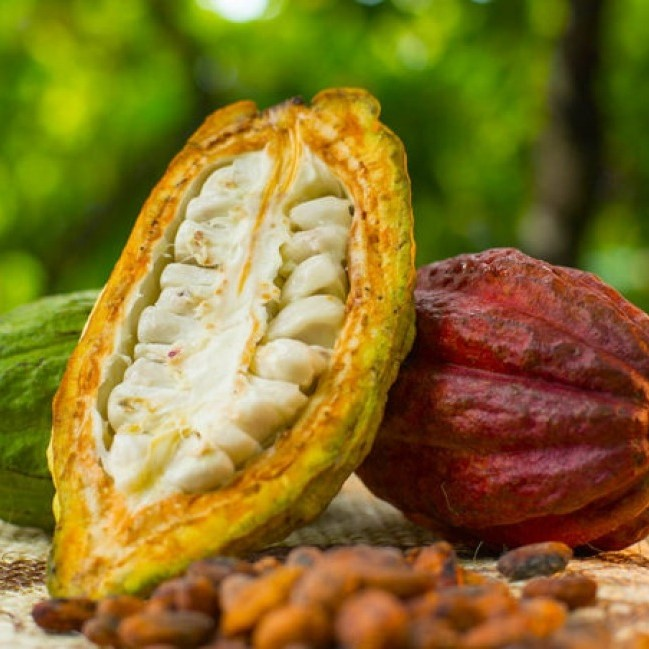
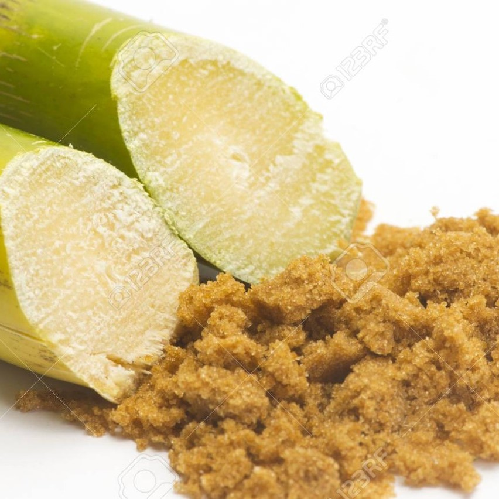
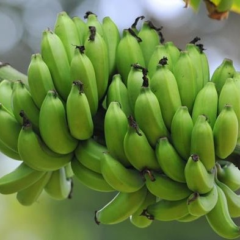

<div class="row">
    <div id="deckTeorama" name="mostrarDeck" class="col-12 animated fadeIn slow">
        <h1 class="h1 text-center">Productos Con Alto Potencial Productivo Para la Exportación</h1>
        <div class="card-deck animated pb-4">
            <div class="card">
                
                <div class="card-body">
                    <h5 class="card-title text-center">PIÑA</h5>
                    <ul class="card-text" style="padding: 0;">
                        <li>Es el producto representativo del municipio en donde sus derivados se comercializan en la
                            Costa
                            Atlántica y Bucaramanga.</li>
                        <li>Producción: 6.460 Toneladas.</li>
                        <li>Rendimiento: 38 Toneladas por hectárea.</li>
                        <li>Periodicidad: Cultivo permanente, con ciclo productivo largo.</li>
                        <li>Área sembrada: 170 hectáreas.</li>
                    </ul>
                    <p class="card-text"><small class="text-muted">Fuente: Datos abiertos Colombia - Gov.co. (2018).
                            Evaluaciones Agropecuarias Municipales EVA | Datos Abiertos Colombia. la plataforma de datos
                            abiertos del gobierno colombiano.
                            <a href="https://www.datos.gov.co/Agricultura-y-Desarrollo-Rural/Evaluaciones-Agropecuarias-Municipales-EVA/2pnw-mmge/data"
                                target="_blank">Ir a fuente</a></small>
                    </p>
                </div>
            </div>


            <div class="card sm-px-2">
                
                <div class="card-body">
                    <h5 class="card-title text-center">CACAO</h5>
                    <ul class="card-text" style="padding: 0;">
                        <li>Es uno de los productos más demandados a nivel internacional y por el cual Colombia le esta
                            apostando para sus exportaciones.</li>
                        <li>Producción: 394 Toneladas.</li>
                        <li>Rendimiento: 0,69 Toneladas por hectárea.</li>
                        <li>Periodicidad: Cultivo permanente, con ciclo productivo largo.</li>
                        <li>Área sembrada: 1.099 Hectáreas.</li>
                    </ul>
                    <p class="card-text"><small class="text-muted">Fuente: Datos abiertos Colombia - Gov.co. (2018).
                            Evaluaciones Agropecuarias Municipales EVA | Datos Abiertos Colombia. la plataforma de datos
                            abiertos del gobierno colombiano. <a
                                href="https://www.datos.gov.co/Agricultura-y-Desarrollo-Rural/Evaluaciones-Agropecuarias-Municipales-EVA/2pnw-mmge/data "
                                target="_blank">Ir a fuente</a></small></p>
                </div>
            </div>


            <div class="card sm-px-2">
                
                <div class="card-body">
                    <h5 class="card-title text-center">CAÑA PANELERA</h5>
                    <ul class="card-text" style="padding: 0;">
                        <li>Teorama es el segundo productor del departamento de caña panelera.</li>
                        <li>Producción: 4.435 Toneladas.</li>
                        <li>Rendimiento: 5 Toneladas por hectárea.</li>
                        <li>Periodicidad: Cultivo permanente, con ciclo productivo largo.</li>
                        <li>Área sembrada: 897 Hectáreas.</li>
                    </ul>
                    <p class="card-text"><small class="text-muted">Fuente: Datos abiertos Colombia - Gov.co. (2018).
                            Evaluaciones Agropecuarias Municipales EVA | Datos Abiertos Colombia. la plataforma de datos
                            abiertos del gobierno colombiano. <a
                                href="https://www.datos.gov.co/Agricultura-y-Desarrollo-Rural/Evaluaciones-Agropecuarias-Municipales-EVA/2pnw-mmge/data"
                                target="_blank">Ir a Fuente</a> </small></p>
                </div>
            </div>

            <div class="card sm-px-2">
                
                <div class="card-body">
                    <h5 class="card-title text-center">PLATANO</h5>
                    <ul class="card-text" style="padding: 0;">
                        <li>Este cultivo fue el segundo con mayor producción en el municipio de Teorama para el 2018.</li>
                        <li>Producción: 4.358 Toneladas.</li>
                        <li>Rendimiento: 6,11 Toneladas por hectárea.</li>
                        <li>Periodicidad: Cultivo permanente, con ciclo productivo largo..</li>
                        <li>Área sembrada: 813 Hectáreas</li>
                    </ul>
                    <p class="card-text"><small class="text-muted">Fuente: Datos abiertos Colombia - Gov.co. (2018).
                            Evaluaciones Agropecuarias Municipales EVA | Datos Abiertos Colombia. la plataforma de datos
                            abiertos del gobierno colombiano. <a
                                href="https://www.datos.gov.co/Agricultura-y-Desarrollo-Rural/Evaluaciones-Agropecuarias-Municipales-EVA/2pnw-mmge/data"
                                target="_blank">Ir a Fuente</a> </small></p>
                </div>
            </div>


        </div>
    </div>
</div>
